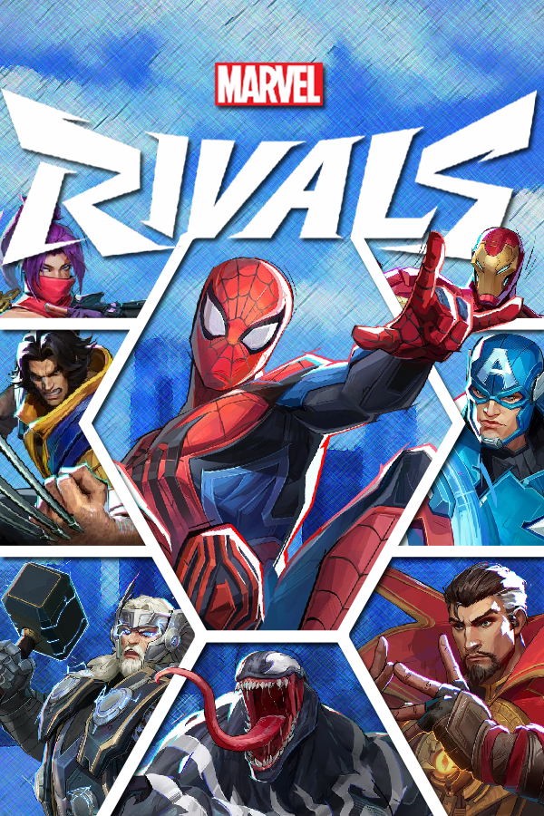

Marvel Rivals
Every archived year-end list appearance, including placement and points earned.
About the Game
Marvel Rivals is a Super Hero Team-Based PVP Shooter! Assemble an all-star Marvel squad, devise countless strategies by combining powers to form unique Team-Up skills and fight in destructible, ever-changing battlefields across the continually evolving Marvel universe! A Deep and Varied Marvel RosterChoose from a vast array of fan-favorite and cult-classic Marvel Super Heroes and Super Villains from across the Avengers, Guardians of the Galaxy, X-Men, and many more from across the Marvel Multiverse. Fast and Fun 6v6 Action with Ever-Changing Game DynamicsWith intricate environments, fast-paced gameplay, and ever-changing battlefields, there's never a dull moment in Marvel Rivals! Battle as Super Heroes and Super Villains with incredible abilities and combine your powers to bring unexpected fun to the battlefield in a matter of seconds.Dynamic Hero SynergyCoordinate unique combinations between characters to ignite surprising Team-Up Skills! Unleash the synergy of combined superpowers and invent new tactics that can turn the tide of combat. Ride on Groot's back as Rocket Raccoon to take on your enemies as a dangerous duo, unleash Gamma energy as Hulk to charge Iron Man's armor for massive damage, and so much more! Creative Environment DestructionTear your way through iconic Marvel worlds across destructible environments! From Asgard to the Tokyo of 2099, use superpowers to alter these environments, reshape the terrain, and craft a strategic advantage on the battlefield! Take cover to dodge attacks or use makeshift weapons to strike down enemies. Players will find countless ways to utilize the environment to claim victory!Continually Evolving Universe and Robust Post-Launch UpdatesThe Marvel Multiverse brings infinite possibilities! Each seasonal drop will introduce new Super Heroes to the battlefield along with challenging and diverse maps! Unlock new content to implement across various gameplay strategies while experiencing thrilling action and endless possibilities in these adventurous team battles!
| Released | 2024-12-06 |
|---|---|
| Developer | NetEase Games |
| Publisher | Netease |
| Genres | Action |
| Platforms | Xbox Series S/X, PlayStation 5, PC |
Steam AchievementsMultiplayerFull controller supportCo-opcooperativeThird PersonSci-fiOnline Co-OpFree to PlayThird-Person ShooterPvPCross-Platform Multiplayer
Where to Buy
Game information provided by RAWG.
Points by Year
List History
| Year | Source | List | Placement | Points |
|---|---|---|---|---|
| 2025 | TIME | The 10 Best Video Games of 2025 | 10 | 5 |